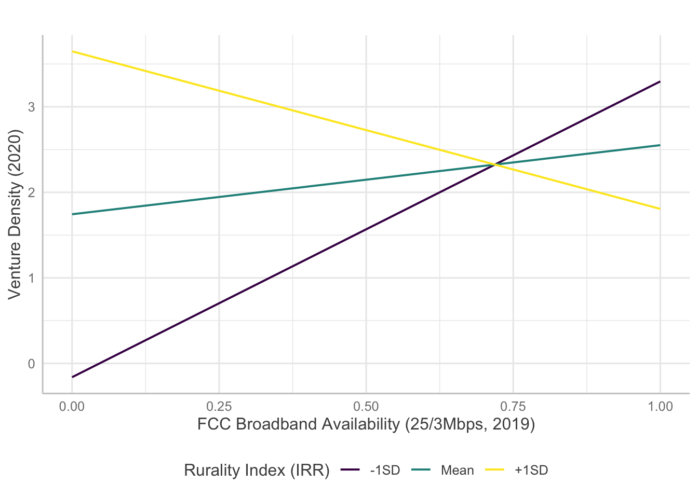
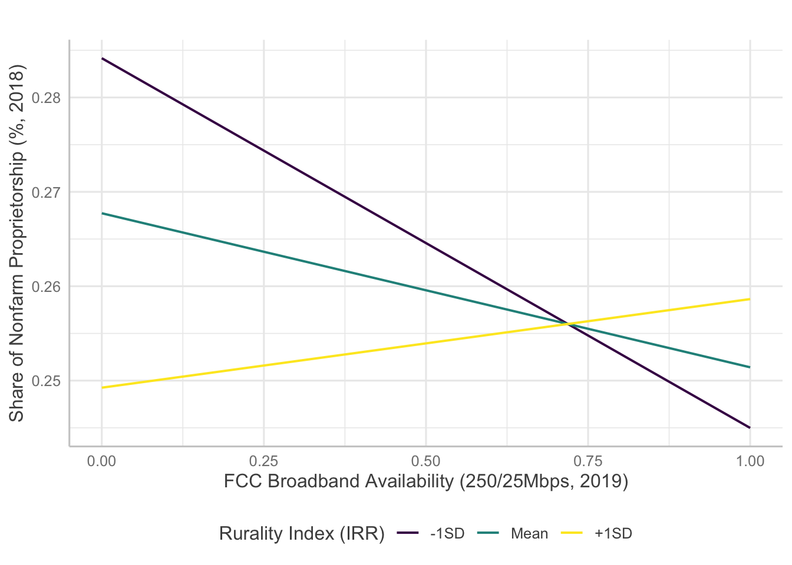
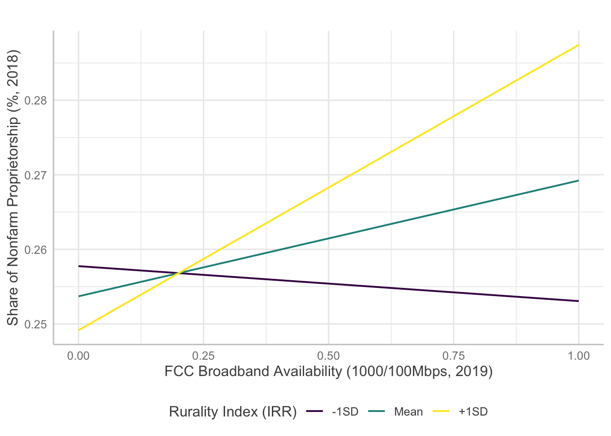
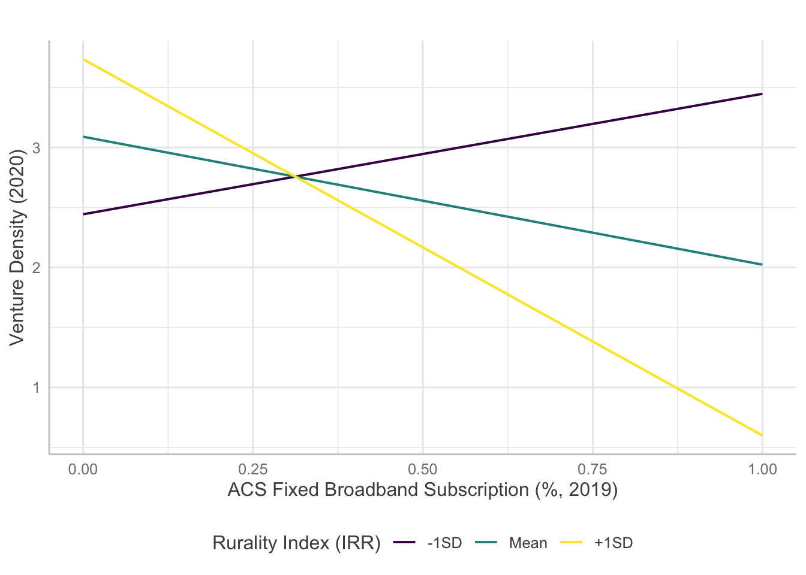
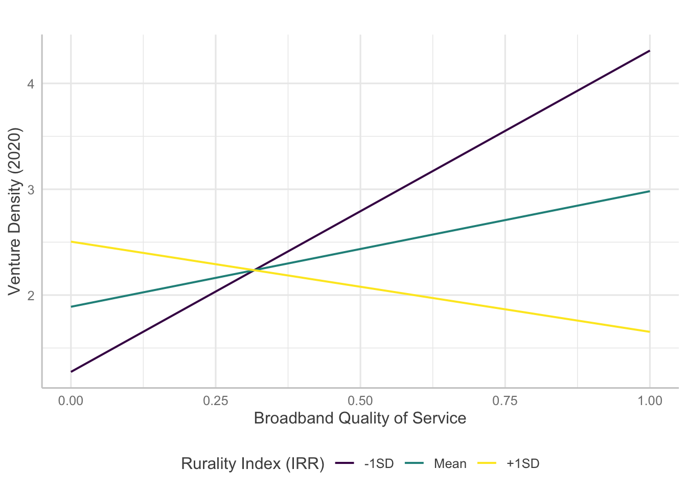

In this document, I will set up, run, and examine several multiple regression models. In general, the models investigate the relationships between broadband and entrepreneurship. Specifically, how broadband influences entrepreneurship. Furthermore, the models will explore how different measures of broadband, specifically measures of availability, adoption, and quality of service (QoS) explain entrepreneurial activities differently. Finally, I will explore how broadband interacts with rurality in its effect on entrepreneurial factors.
First, let’s take another look at some of the key variables.
pct_nonfarm_bea_2019: % of nonfarm proprietors over total employment in 2019 (Source: BEA)vd_mean_20: Average venture density from Jan 2020 to Sept 2020 (Source: GoDaddy)Nonfarm proprietors share is defined as the percentage of nonfarm proprietorships over total employment in the county in 2019. According to the Bureau of Economic Analysis (BEA), nonfarm proprietorship “consists of the number of nonfarm sole proprietorships and the number of individual general partners in nonfarm partnerships.”. Change in the share of nonfarm proprietorship is a simple change measure calculated by substracting nonfarm proprietors share in 2012 from the same measure in 2019.
pct[download speed_upload speed]_dec_2019_fcc: FCC broadband availability in % (Data as of Dec 2019, multiple download and upload speed availability investigated)pct_fixed_acs_2019: ACS broadband subscription in % (2019)pct_bb_qos: Broadband quality of service (composite variable of MS broadband and M-Lab broadband measure)IRR2010: Rural index (larger = rural)Here I investigate models that estimate broadband variables’ effect on the entrepreneurial outcome. Several different broadband measures are in the dataset. Each broadband measure was introduced separately as they are highly inter-correlated.
The models are fitted using the codes below
# Model 2 with FCC 25/3 %
mod.2.FCC.25.3 <- lm(vd_mean_20 ~ pct_genz_2019 + pct_millennial_2019 +
pct_genx_2019 + pct_boomers_2019 + pctlessthanhigh_2019 + pctbachelors_2019 +
pctgraduate_2019 + indstry_diversity + pct_unemployment_2019 + digital_distress_2019 +
pct25_3_dec_2019_fcc * IRR2010, data = d)| 1 | 2 | 3 | 4 | 5 | 6 | |
| (Intercept) | -2.811 | -.714 | 8.796 | 15.017 | 7.634 | 4.144 |
| (15.559) | (14.176) | (13.382) | (12.879) | (14.933) | (13.673) | |
| GenZ | -.419 | -1.140 | -1.851 | -2.631 | 1.012 | 2.508 |
| (8.939) | (9.080) | (8.991) | (9.015) | (9.258) | (8.997) | |
| Millennial | -7.379 | -4.663 | -5.734 | -8.384 | -7.645 | -4.212 |
| (6.728) | (6.789) | (6.749) | (6.739) | (6.833) | (6.865) | |
| GenX | 15.997* | 16.231* | 13.971* | 13.014* | 13.773* | 15.665* |
| (6.494) | (6.516) | (6.459) | (6.557) | (6.575) | (6.542) | |
| Boomers | 11.487 | 13.699 | 12.743 | 12.321 | 12.542 | 16.195* |
| (7.344) | (7.390) | (7.292) | (7.328) | (7.595) | (7.477) | |
| Less than high school | -6.548* | -6.635** | -6.831** | -8.099*** | -7.492** | -6.546** |
| (2.576) | (2.550) | (2.508) | (2.435) | (2.578) | (2.508) | |
| Bachelors degree | 15.475** | 14.453** | 15.228** | 18.004*** | 16.392*** | 13.358** |
| (4.790) | (4.748) | (4.732) | (4.712) | (4.835) | (4.963) | |
| Graduate degree | .201 | -1.390 | -.656 | 2.639 | 3.837 | -.867 |
| (9.786) | (9.721) | (9.673) | (9.768) | (9.814) | (9.852) | |
| Industry diversity | -9.601 | -5.821 | -9.683 | -13.937* | -14.198* | -10.005 |
| (6.096) | (6.195) | (5.918) | (5.730) | (5.886) | (5.934) | |
| Unemployment | 13.255* | 12.775* | 11.866 | 10.041 | 10.404 | 11.000 |
| (6.270) | (6.141) | (6.085) | (6.158) | (6.168) | (6.135) | |
| Digital distress | -.042* | -.040* | -.044** | -.045** | -.056* | -.037* |
| (.016) | (.017) | (.016) | (.016) | (.025) | (.017) | |
| FCC BBnd (25/3) | 16.181* | |||||
| (7.385) | ||||||
| FCC BBnd (100/10) | 12.560** | |||||
| (4.125) | ||||||
| FCC BBnd (250/25) | 7.524** | |||||
| (2.889) | ||||||
| FCC BBnd (1000/100) | 3.598 | |||||
| (3.043) | ||||||
| ACS BBnd Sbscr | 11.180 | |||||
| (7.524) | ||||||
| BBnd QoS | 12.756** | |||||
| (4.440) | ||||||
| Rurality Index (2010) | 20.009 | 11.927 | 2.689 | -4.624 | 6.841 | 6.837 |
| (11.951) | (6.346) | (4.385) | (2.760) | (8.212) | (5.219) | |
| FCC BBnd (25/3) x Rurality | -28.435* | |||||
| (12.375) | ||||||
| FCC BBnd (100/10) x Rurality | -22.381** | |||||
| (6.899) | ||||||
| FCC BBnd (250/25) x Rurality | -14.903** | |||||
| (5.000) | ||||||
| FCC BBnd (1000/100) x Rurality | -8.009 | |||||
| (5.414) | ||||||
| ACS BBnd Sbscr x Rurality | -22.737 | |||||
| (13.247) | ||||||
| BBnd QoS x Rurality | -21.601** | |||||
| (7.579) | ||||||
| Observations | 363 | 363 | 363 | 363 | 363 | 363 |
| R2 | .371 | .382 | .385 | .369 | .366 | .375 |
| Adjusted R2 | .348 | .359 | .362 | .345 | .342 | .351 |
| Residual Std. Error (df = 349) | 2.370 | 2.349 | 2.343 | 2.374 | 2.380 | 2.363 |
| F Statistic (df = 13; 349) | 15.836*** | 16.588*** | 16.801*** | 15.672*** | 15.473*** | 16.084*** |
| Notes: | *P < .05 | |||||
| **P < .01 | ||||||
| ***P < .001 | ||||||
Several models indicate statistically significant interaction effects happening between broadband and rurality. Here, I will examine how the significant interaction terms predict entrepreneurship measures.
For venture density, broadband measures except availability of 1000/100 Mbps level broadband showed significant interaction with rurality. However, the results are confounding as the direction of the effects are opposite to initial hypotheses.

Copyright © 2020 Jaewon Royce Choi, Technology & Information Policy Institute (TIPI). All rights reserved.